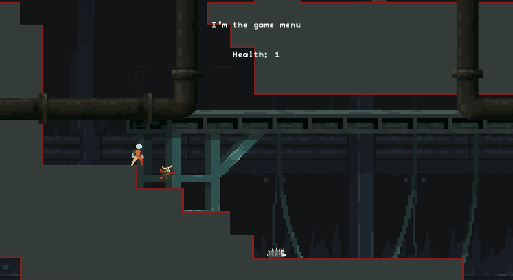

The Lost Hope (Monogame Version)
Project Description
The lost hope is 2D metroidvania, bloodborne-like game. I started developping it using Monogame but it wasn't the best choice to build such a big game as a one man team. Most of the development time was taken by creating an engine on top of monogame.
I actually ended up getting pretty far and coding a lot of interesting systems. You can check all of that out on the github repo linked above.
Gameplay
In terms of gameplay, this is what I managed to get:

This is a broad list of the gameplay features:
- Character movement (works for both player and npcs including enemies)
- State machine controller for all game entities that need state, the same implementation is used between all of them.
- Full integration with LDtk as well as level transitions
- Main mechanic implemented, which is basically Ammo = Health
- Simple enemy AI
- Interactions
Engine
Lost Hope's engine has been developed along with the creation of the game. It features:
- An Animation system using Aseprite and Monogame.Aseprite
- An Orthographic camera
- A fully custom pooled input system
- A fully custom UI system
- A custom Content Manager
- Pooling
- Localization
- Scriptable Objects, which function very similarly to unity's scriptable objects, they are containers of data, but with the added benefit of being easier to work with and edit even during runtime.
Custom Editor
I also created a dedicated editor using Imgui, to help me edit the scriptable objects using reflection: